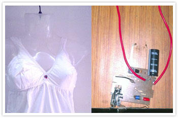

WORLDS FIRST ANTI-RAPE DEVICE INVENTED BY YOUNG STUDENT RESEARCHERS AT SRM INSTITUTE

Student researchers in Chennai, India have invented the world’s first anti rape device that protectswomen from rape, sexual harassment and sexual assault. “We were always curious and inquisitive about how principles of engineering could be used to mitigate everyday problems that we face. One idea consumed us the most: about designing and building a device that would protect a women when occurs a sexually assault “, said Manisha Mohan , third year automobile engineering student at SRM Institute of Science and Technology (formerly known as SRM University), Chennai, who along with team members Niladri Basu Bal and Rimpi Tripathi of Instrumentation and Control Engineering, invented SHE or Society Harnessing Equipment, as they named their new device. The invention was a conscious and deliberate attempt to do two things: curb the assaulter, and punish them at the spot of the crime.
The design is both ingenious and clever, combining the disciplines of micro processing, controls, electronics and communications. “The entire electronics is contained in the bi layer fabric”, explained Manisha, “the first layer provides insulation to the woman, while the current flows in the closed loop”, she went on to add. When pressure is applied by touch the closed loop gets actuated, and the circuit breaks causing a 3800kv electric shock capable of causing severe burns. Almost instantaneously, the device sends out a message to alert the dear ones of the victim, and the police with location, through an embedded GPRS system. SHE, which is being patented, is an innerwear, or bra to be precise, actuated with sensors and electric shock circuit board, and sensitive to squeeze, pinch and grab over the women’s bosom.
The team is working on trying to make the device more compact and wearable, and in interfacing the system with a smart phone using Bluetooth and infrared, so stress messages can be sent out instantly. Clearly brilliant young minds are at work, looking to address issues facing society, using engineering as a lever to empower lives.